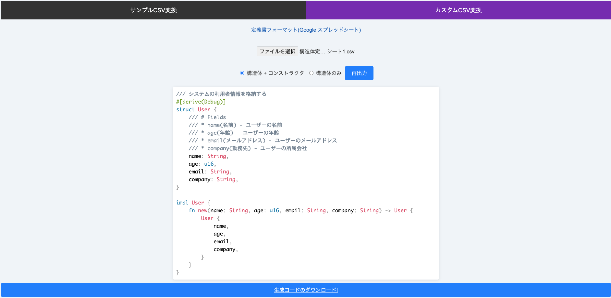
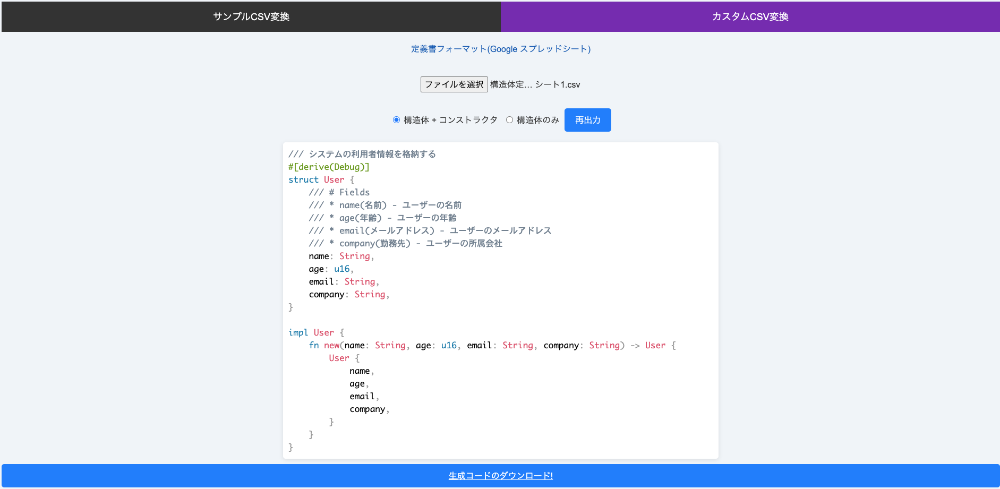

1. サンプルCSV(Google スプレッドシート)をダウンロードします。
2. ダウンロードしたCSVファイルを書き換えます。

3. ファイルを選択ボタンから書き換えたファイルを選択します。
4. 「生成コードのダウンロード」ボタンを押して、構造体コードを保存します。(構造体のみで良い場合には「構造体のみ」を選択し、再出力ボタンを押してください)

ここにCSVファイルをドロップするか、下のボタンから選択してください
1. サンプルCSV(Google スプレッドシート)をダウンロードします。
2. ダウンロードしたCSVファイルを書き換えます。
3. ファイルを選択ボタンから書き換えたファイルを選択します。
4. 「生成コードのダウンロード」ボタンを押して、構造体コードを保存します。(構造体のみで良い場合には「構造体のみ」を選択し、再出力ボタンを押してください)
